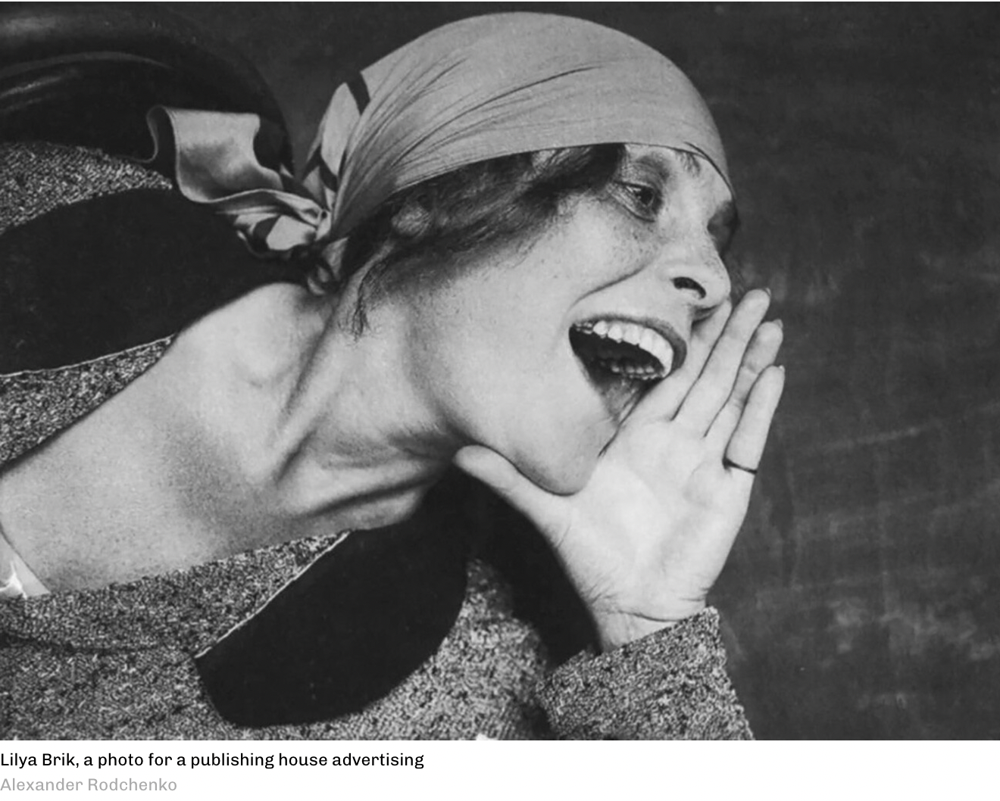
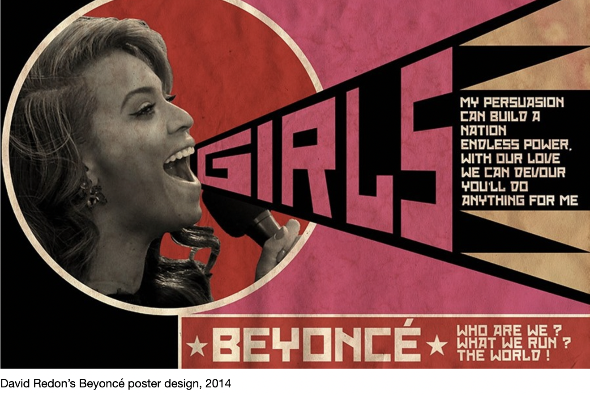

Final Presentations (2024)

Lilya Brik (a photo that became famous because of the famous constructivist poster and one of inspirations for the character in Bed and Sofa. A Photo by Alexander Rodchenko (1924).

Fig. 2. David Redon's Beyonce poster (2014).